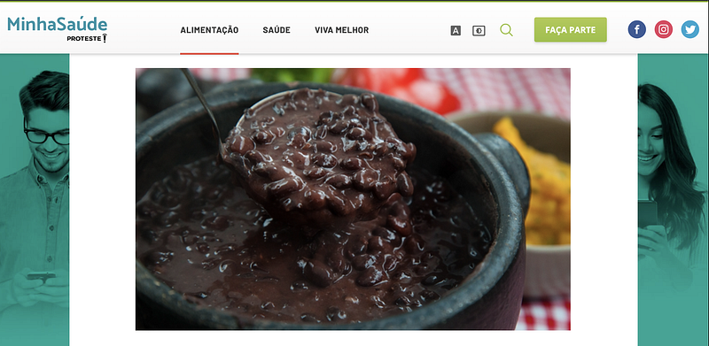
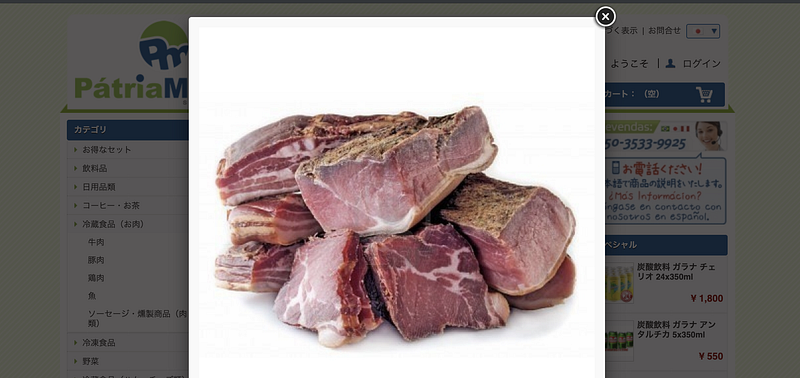
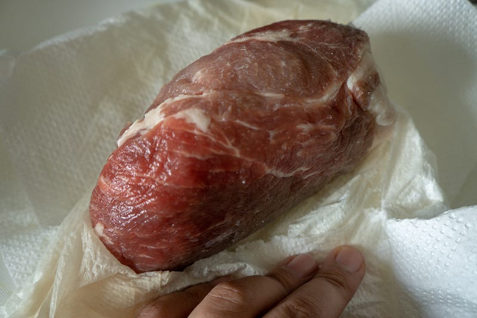
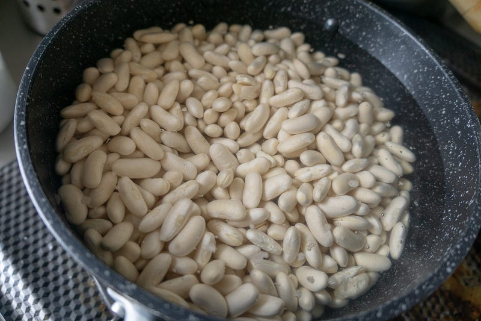
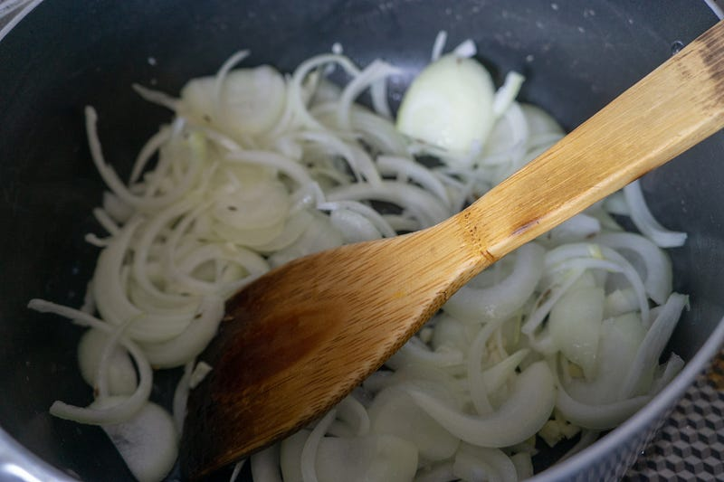
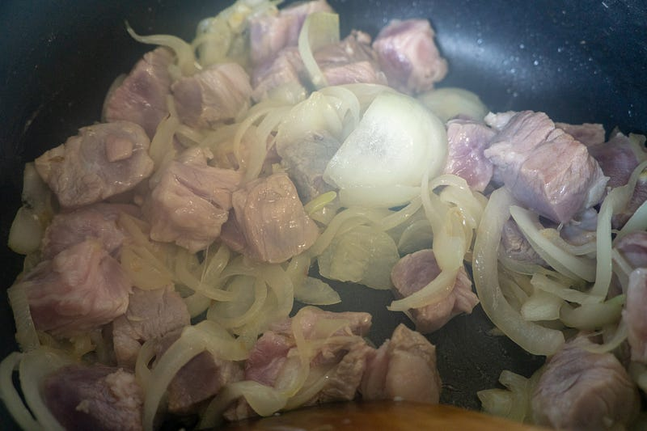
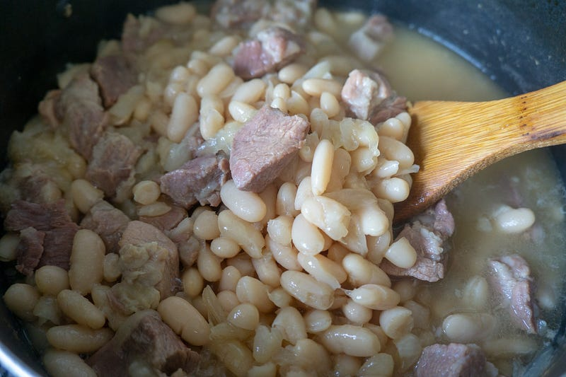
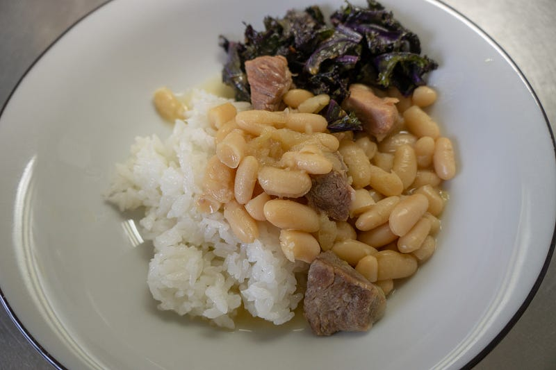
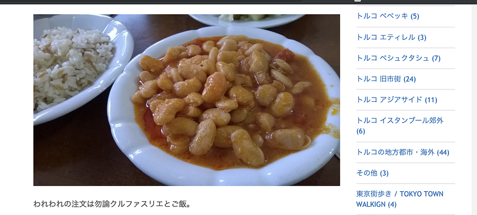

Feijao （ブラジル風インゲン豆と肉の煮込み）もどきを作る
Feijao （ブラジル風インゲン豆と肉の煮込み）もどきを作る
先日六本木バル○ッコアと恵比寿リオ○ランデと、2ヶ月のスパンでシュラスコを食べに行く機会があったのだが、どちらの店もfeijãoがイマイチすぎて悲しくてしょうがなかった。
まずどちらに店もとにかく味が全体的に薄い。インゲン豆入りすまし汁じゃねぇんだよ、煮込み料理なんだよ、ちゃんとしてくれ。正直不味かったよ…
そしてもう一つは個人の好みなのだが、黒インゲンを使ってない… 白インゲンじゃイマイチ食った気がしないんだよ、黒インゲン使ってくれ…

feijãoはブラジル人にとっての白米と味噌汁的なポジションなわけで、それが不味いと魂を汚された気分なわけですよ。
日本人もカピカピご飯と味付けが薄くて何を飲んでるのかわからない味噌汁出されたら一日中ブルーになっちゃうでしょ？そういうことなんですよ。
ともあれ、どちらの店も食べ放題メニューの一部として長時間feijãoを放置しておくつもりだったから味が薄いんだろうし、黒インゲン豆じゃなくて白インゲン豆なのは日本ではイマイチ黒豆の煮込みは見た目の問題があることや、白インゲンのほうが調達が簡単ということなのだろう。
うれしくはないが、店がわにも一応事情があるのだろう、ということで一応納得はしてる。
しかし、味付けに満足するものを食べたい。ならば自分で作った方が早い。
というわけで本場物は無理にしても、とりあえずそれっぽいもどき料理を作る。以下は筆者の想像による完全なるもどき料理なので、レシピの信憑性・信頼性については自己責任でお願いします。
feijãoはそのまま「豆」という意味で、feijão com arrozで「豆と米」になる。基本豆と少量の肉を一緒に煮込んで、カレーみたいな感じでご飯にかけて食べるのだが、これに肉とかがたくさんfeijoadaになり、家族とかが集まった時のごちそうになる。
フェジョアーダ（ ポルトガル語：feijoada, ブラジル・ポルトガル語: , ヨーロッパ・ポルトガル語: フェイジョアーダ、フェジョアダとも表記）は、 豆と 豚肉、 牛肉を煮込んだ料理。 ブラジル、 ポルトガル、 アンゴラ、…ja.wikipedia.org
今回はfeijão的なものを作る。しつこいが、あくまで「もどき」であるということを理解していただきたい。
塩味と出汁は本場のcarne seca（牛干し肉）を使いたいところだが、そんなものはない。

そして自分は豚肉のほうが好きなので、carne secaの代用品としてまず一昼夜豚肩ロース500gを大量の塩につけ込んでおく。目分量なんだけど、多分40gくらいじゃないかなぁ。ジップロックに入れて冷蔵庫に放置。豚肩ロースは焼くと微妙だけど、こういう形で一手間かけて煮込むとほろほろになってうまい

その間に町に出て黒インゲン豆を探しにいく。確かハナマサで以前見た記憶があったのだが、今回は見つからず。白インゲン豆すら見当たらない。諦めずに探していると、イタリアからの高い輸入品の白インゲン豆を発見。
普段だったら先にどこかネットでもう少し安く手配しておくんだが…GW中に思い立ったものなので、今回は見つかっただけよしとする。黒インゲン豆はそのうちどこかでやろう。
白インゲン豆はとりあえず一晩たっぷりの水に入れておく。

翌日、やっと調理開始。
大きめのタマネギを細切りにして、ニンニクとオリーブオイルで炒める。香りを立たせたい香辛料があればこの時点で投入。自分は今回は少量のクミンを入れた。

タマネギがいい色になってきたら、よく水気を切っておいてから一口大にカットした豚肉を投入して一緒に炒める。

豚肉の表面に火が通ったら豆を投入。ヒタヒタになるくらいの水を入れて煮る。ローリエがあれば入れるとよりそれっぽい。うちはローリエは基本使わないのでパスした。
煮立つと灰汁が出るので適当に除去。神経質になる必要はないと思う。
あとは煮立った状態をキープしつつ、弱火でお好みのところまで。水でしっかり戻してあれば多分1時間強くらいで豆自体は完全にほろほろになってるとは思うが、今回は水量を調整しつつ3時間ほどやり続けてみた。
味付けは豚肉の塩分がほとんどすべてまかなってくれるが、調整は必要なのでどこかのタイミングで水量を調節するなり塩を追加するなりする。

以上！
あとは本当はcouve verde （ケール）の炒め物がほしいのだが、今回はサラダ用のヤツしかなかった。一応やってみるかと炒めてみたのだが、これはいただけない。ケールの炒め物をするときはちゃんとでっかい葉のヤツを使え。

うまい！
完全なるもどき料理だが、なんとなくfeijão paulistaみたいなものができた。塩味の調節さえ間違えなければこれだけ適当に作ったものでもうまい。
なおほぼ同じ手順で、肉を牛肉に（塩漬けはしなくてもいいかも）して、トマトペーストで味をつけるとトルコ料理のクルファスリエっぽくなると思います（こちらももどきですけどね）。

豆と肉の煮込みは世界共通料理！
ところで、もしブラジル人が満足できるシュラスカリアが東京近郊にあるなら是非情報が欲しい。今のところ冒頭に出てきた店以外のお気に入りの店は一軒横浜にあるんだけど、もうちょっとうまいところがあるんじゃないかなぁ、と思ってるので、ほかに店があるなら知りたい。希望はpicanhaとcoração（鶏のハツ）がちゃんとでてくることと、feijãoがうまいことです。